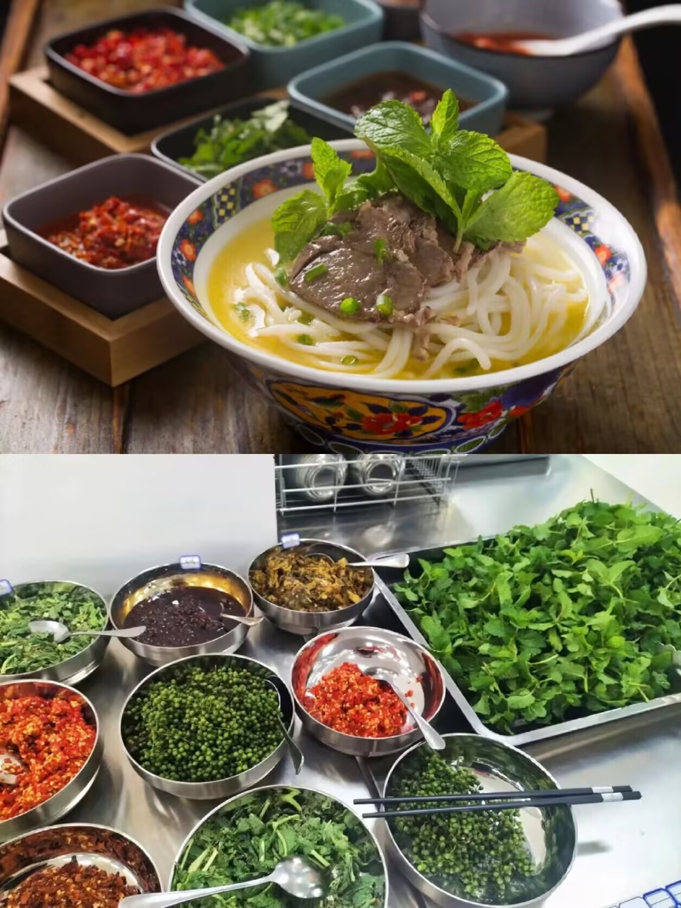
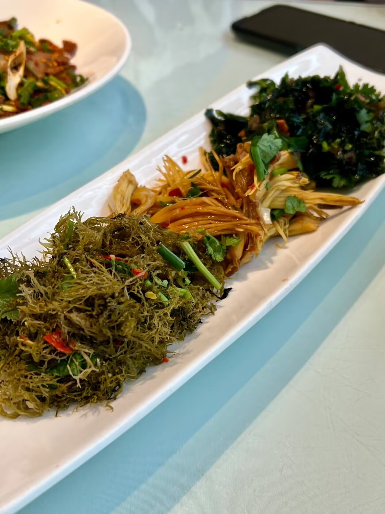
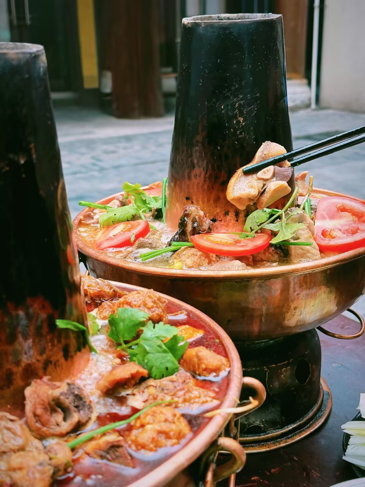
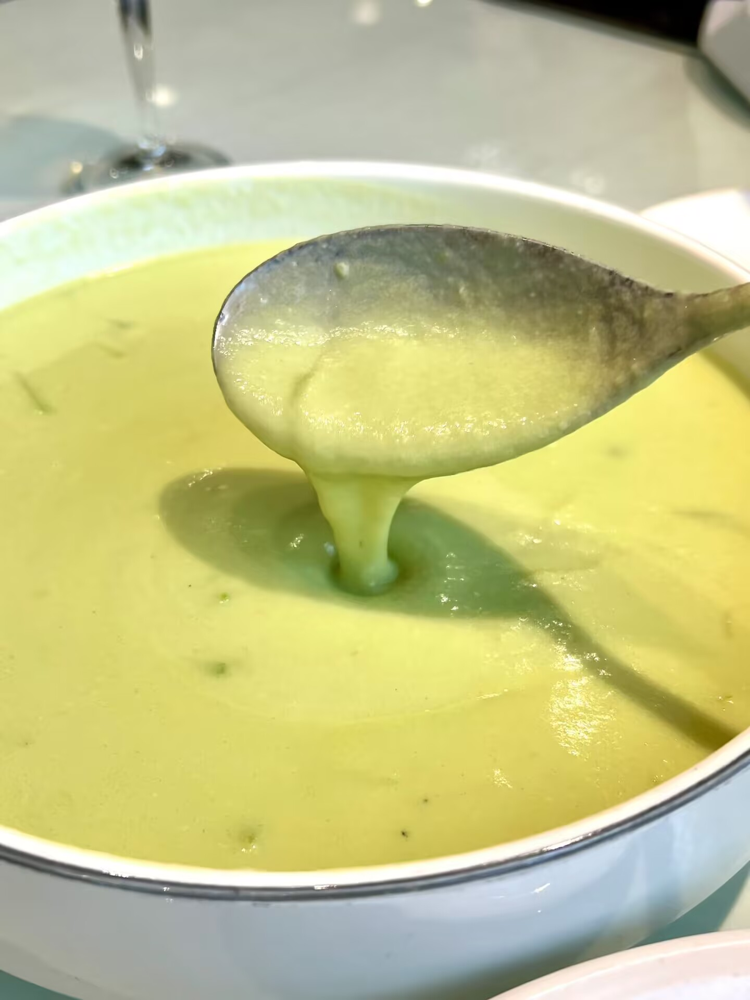
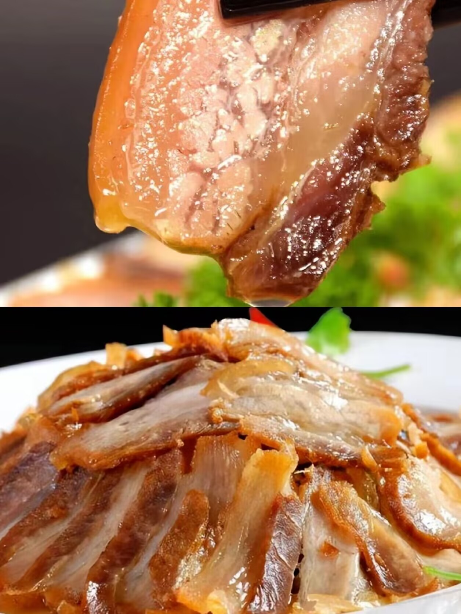
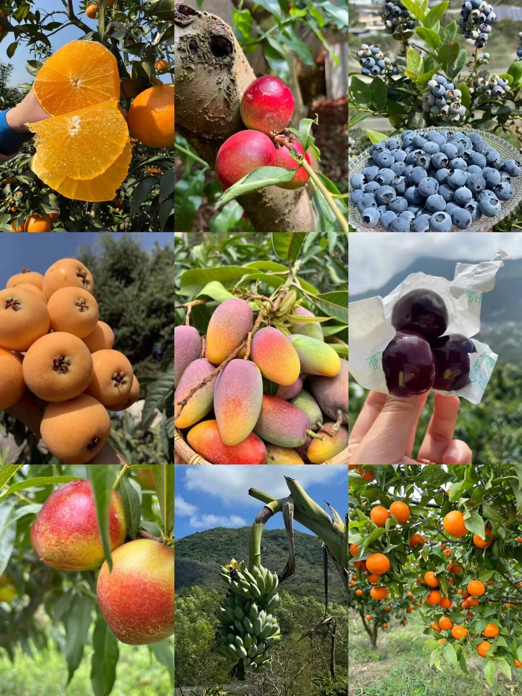

-

盐边羊肉米线
当地人气最高的一种特色小吃，羊肉米线以汤浓味美、鲜香扑鼻、Q弹有嚼劲、滋味绝佳，调味丰富。
-

盐边大笮三花
以树花、石花、攀枝花为原料制成，清爽可口，回味无穷，是大自然的味道，也是盐边生态绿色养生菜。三种自然生长的天然食材，稍微加工一番，在盐边人的手里从此变得与众不同。
-

会理铜火锅
铜火锅中的食材种类繁多，包括新鲜的鸡鸭、牛杂、羊肉、猪排等，以及各种蔬菜和豆制品。
-

盐边豆笙
新鲜的黄豆，嫩三月瓜或半个嫩南瓜制作而成，色泽淡绿、鲜嫩多汁、配以新鲜的青花椒，秀麻可餐，尝一口食欲大增又好消化。
-

盐边油底肉
四川省非物质文化遗产，色泽鲜亮，口味咸淡适中，醇香浓郁、皮耙肉糯。咬上一口简直堪称味蕾体验的绝绝子。
-

攀枝花水果
攀枝花海拔高，昼夜温差大，充足的日照使得这里的水果口感层次丰富，甜度高酸度低。这里的水果都带着原始香味的甜，让人吃上一个就记住，就上瘾！